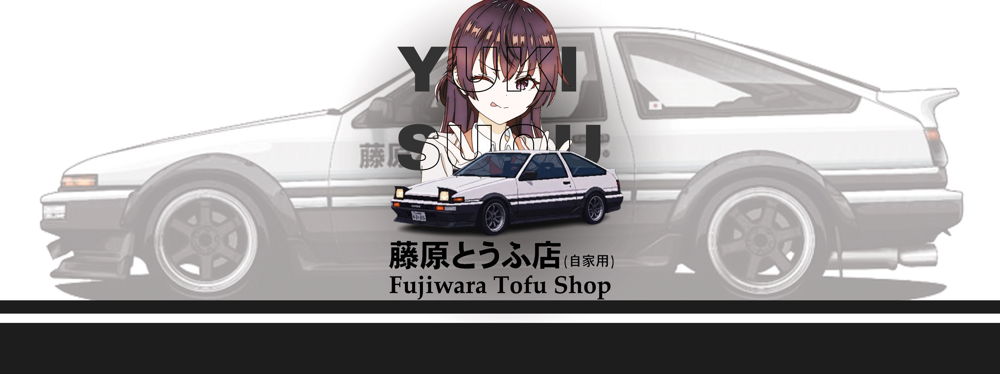
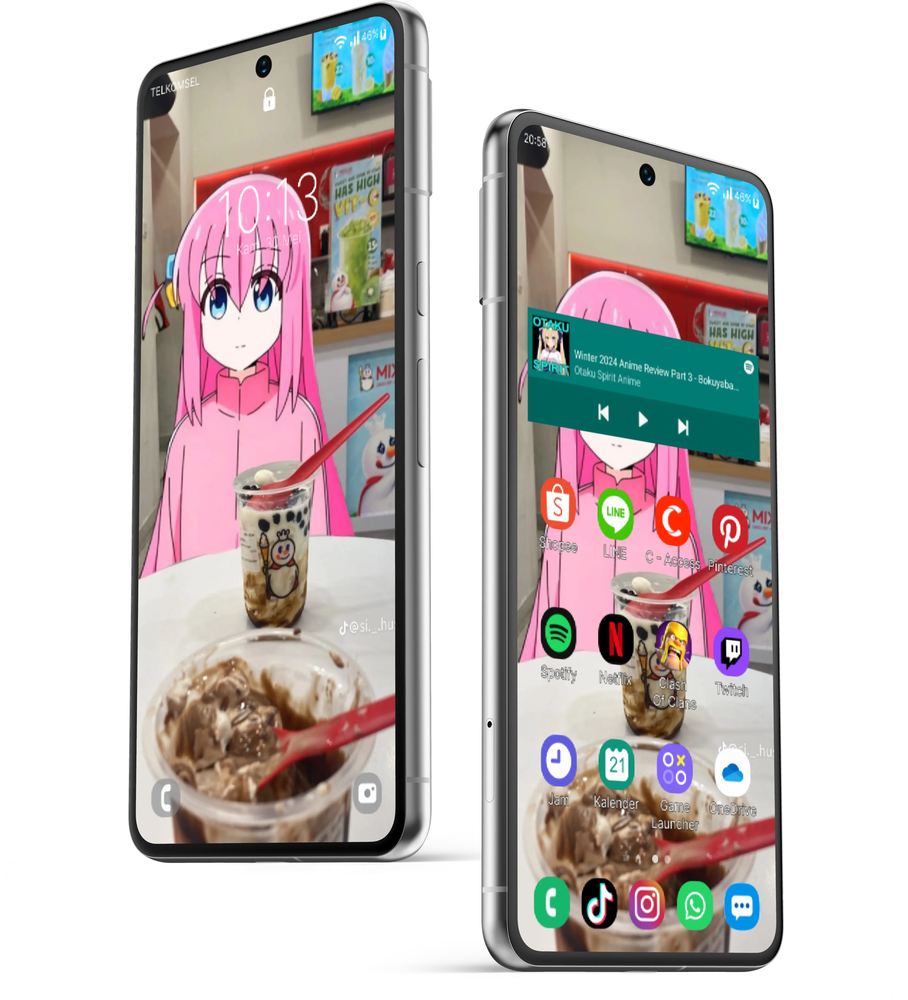
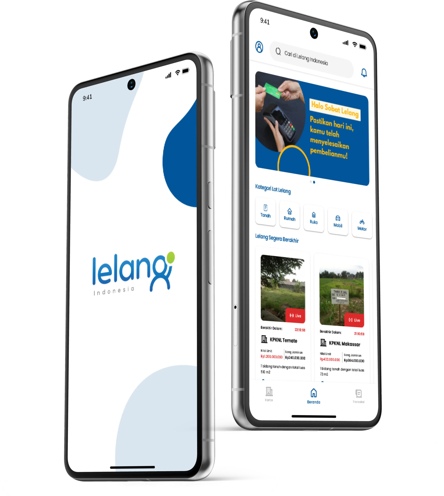

Deskmat Design Project
Deskmats that are designed for gamers and students to use as a desk mat and also a mouse
pad.

Promotional Poster
One of my works requested by Pandaia Tour. The poster is 4:5 ratio to meet the owner's
requirements, informing about an upcoming travel to Yogyakarta and road to Waisak.

Introduction to Figma
A university project to create an introduction to Figma as a beginner — duplicating my
personal mobile phone screen as a reference.

Mobile Phone Replica
A Figma project to create a replica of a mobile app from a website without a mobile
application. Trained UX thinking and presented using the System Usability Scale method.

Thesis Final Project
A Figma project to create a replica of a mobile app from a website without a mobile
application. Trained UX thinking and presented using the System Usability Scale method.